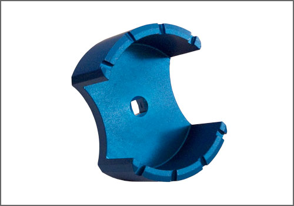
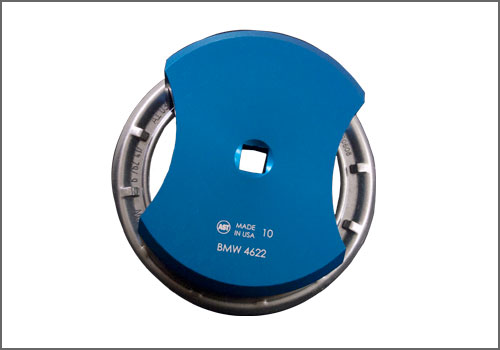
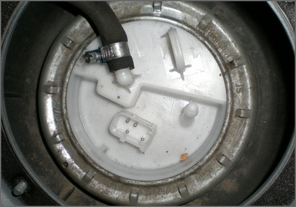

Fuel Tank: Tools and Equipment
Fuel Level Sensor Lock Ring Tool
AST tool# BMW 4622



Used to remove the fuel level lock ring. Comparable to BMW factory tool number #161020
Applicable to BMW Models:
E31, E34, E36, E38, E39, E46, E53, E60, E63, E64, E65, E83, E85, and E90. Fits All Mini Cooper Models.
- Fits BMW and Mini Cooper Models
- Made in the U.S.A.
�
Contact AST for pricing.
Assenmacher Specialty Tools
1-800-525-2943